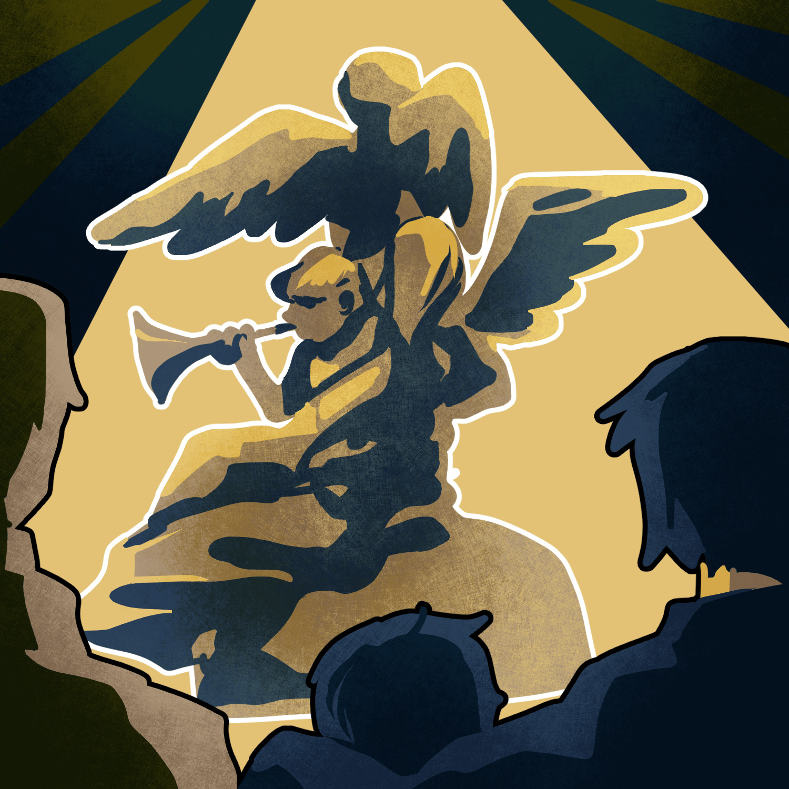

당신은 모든 사람에게 종교를 가지라고 지시했습니다.
종교 대표자들은 기뻐하며 당신에게 감사를 표했습니다.
모든 교육과정에 신학수업이 필수가 됐고
거리 곳곳에 사원이 생겼습니다.
종교를 가지게 된 사람들은 종교에서 강조하는
마음가짐을 지키기위해 노력합니다.

종교의 건물이 많아지면서 자연스럽게 종교건축과
예술이 발달하고 웅장한 찬송가들이 생겨났습니다.
주말마다 예배를 보러오면서 사람들은 소속감과 사명감이 생겨났고
불우한 이웃을 도우며 포교활동에 열을 올렸습니다.
그렇게 종교세력은 커져가 막대한
부와 권력을 가지게 됐습니다.

그들은 신의 뜻과 다르게 신자들을 이용해 사리사욕을 취했고,
다른 종교를 헐뜯으며 싸움을 부추겼습니다.
그리고 새로운 종교들이 계속 생겨나면서 이상한 교리들을 전파하며
신도들의
생각 하나하나를 종교에 의지하게 만들어 버렸습니다.
신도들은 법과 질서보다 교리와 성경의 말을 절대적으로 믿으며
범죄를 저질러도 죄책감을 가지지 않게 됐습니다.
Next